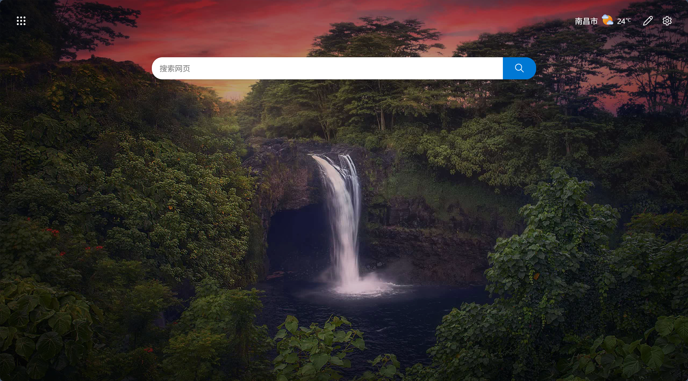

第一篇博客：我的编程学习之路
大家好，这是我发布在GitHub Pages上的第一篇博客。从开始学习编程到现在，我已经掌握了Java、HTML、CSS等基础技术，也完成了几个Web开发实验。

图1：编程学习（绝对路径引用）
在学习过程中，我遇到了很多困难，但也收获了很多成就感。每一个bug的解决，每一个功能的实现，都让我对编程有了更深的理解。

图2：我的学习日常（相对路径引用）
未来我会继续学习更多的技术，比如Spring Boot、Vue.js等，也会在这个博客上分享我的学习心得和项目经验。